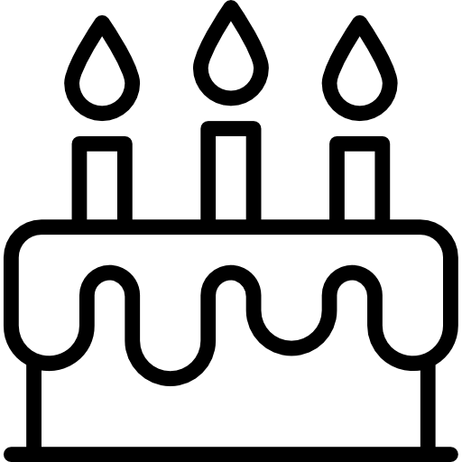

História !
Filha da Rainha Hipólita da civilização de amazonas da ilha paradisíaca Themysira, a Princesa Diana foi mandada como Mulher-Maravilha ao “mundo dos homens” para propagar a paz, sendo a defensora da verdade e da vida na luta entre os homens e o firmamento, entre os mortais e os deuses. Possuindo habilidades super-humanas e seu laço da verdade e os braceletes da vitória.
Princesa da
Ilha Themyscira
Mulher maravilha nos cinemas
A mesma já tem 3 filmes!É uma personagem
Feita pela DC!
